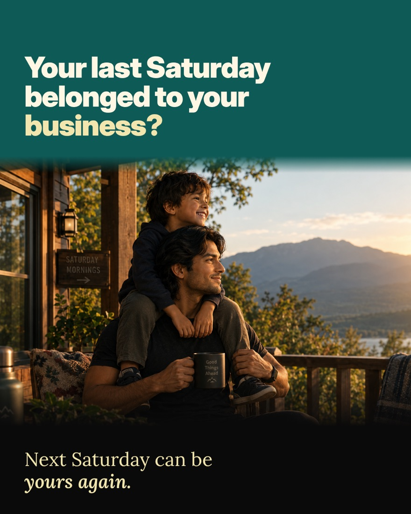
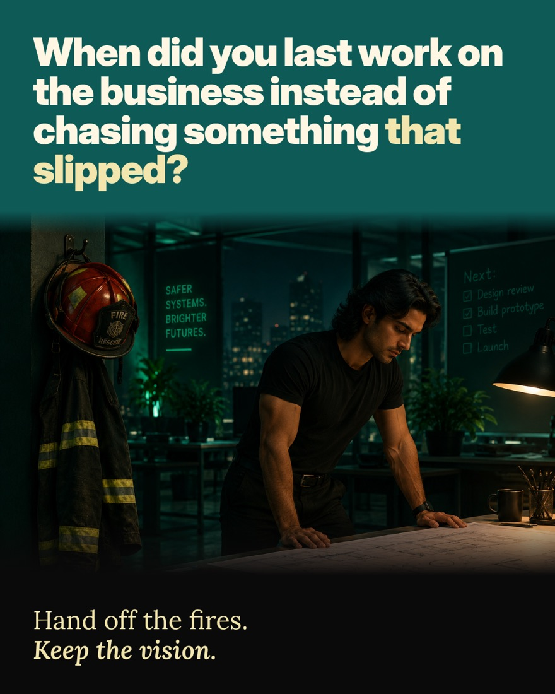
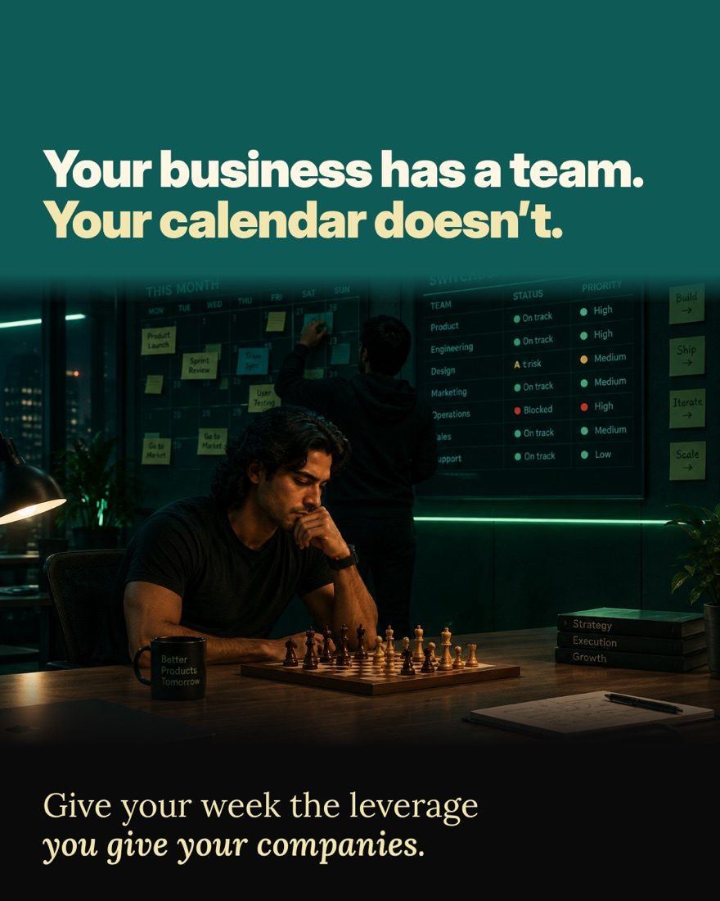
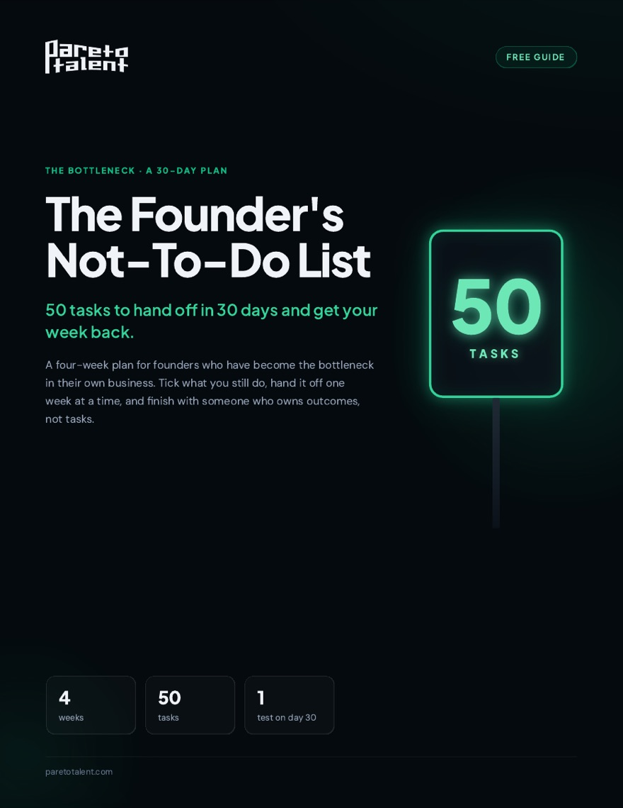
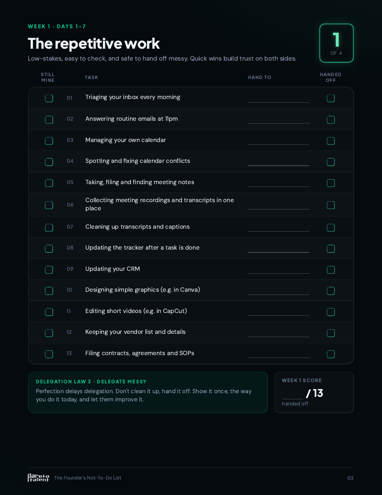

1
Week 1 · Days 1–7
The repetitive work
13 tasksLow-impact, easy to check, safe to hand off messy.
- Triaging your inbox every morning
- Managing your own calendar
- Updating your CRM
Free guide · A 30-day plan
50 tasks to hand off in 30 days and get your week back.
You built the business. Now too much of it runs through you: the inbox, the follow-ups, the "quick" tasks only you know how to do. This list shows what to hand off, in what order, one week at a time.
Free. Works with any assistant, VA or team member.
From Pareto Talent · Trusted by 100+ founders · 4.9★ on Google




What's inside
Tick every task you still do yourself. Then hand off one week at a time, from the repetitive work to someone who owns outcomes.
Week 1 · Days 1–7
Low-impact, easy to check, safe to hand off messy.
Week 2 · Days 8–14
Promises, reminders and prep that live in your memory.
Week 3 · Days 15–21
The help starts building systems so things stop depending on you.
Week 4 · Days 22–30
The help stops taking tasks and starts owning results.

Who it's for
The list works with any assistant, VA or team member. You don't need Pareto to use it.
Proof
founders served
still together at 12 months
applicants make it through (top 1%)
to your first three matches
on Google
pre-vetted candidates
of training before placement
in year one, with zero paid ads
Pareto Talent was built by Kasim Aslam and Ivan Bunin. Ivan started as Kasim's Right Hand at 18, grew into CTO, and helped scale Solutions 8 to an 8-figure exit in 2022. The list is built on Pareto's own Delegation Framework.
“My executive assistant Marina came from Pareto Talent and is just a world-beater. The best EA I have ever had.”
“I've had three different executive assistants before, and I thought it was me, right? I was burning through them. They just weren't up to the task.”
“It's only day 2 and I am already feeling such a relief that I have her during this crucial time in my business.”
Free guide
The form didn't load. Your browser or an ad blocker may be blocking it.
Open the form in a new tabAnswer a few quick questions so we know whether the list and a Matching Call are a fit for you. If they are, you get the list right away and can book your call.